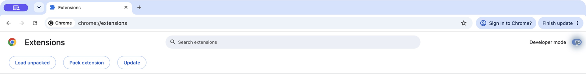
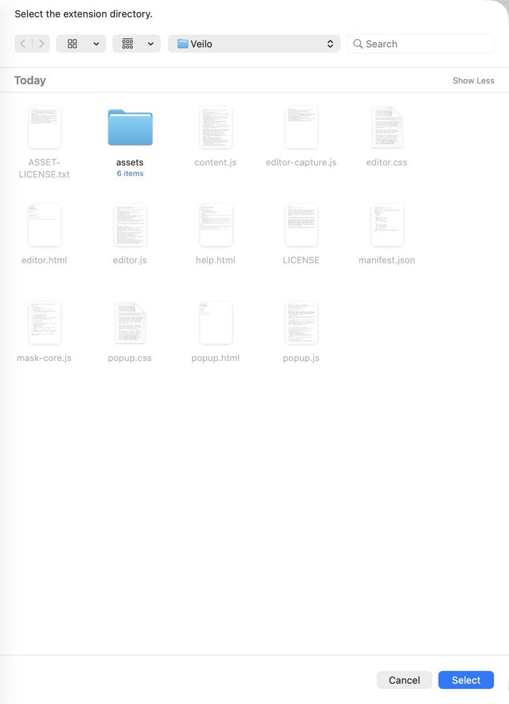

Установить Veilo
в Chrome.
Бесплатная бета для компьютера. Без аккаунта, сервера и подписки.
Бета @@VERSION@@ · Chrome @@MIN_CHROME@@+ на компьютере · Windows, macOS и Linux
Пока Veilo устанавливается вручную: в Chrome Web Store расширение ещё не опубликовано. На телефоне можно пользоваться редактором скриншотов без установки.
Сохрани всю папку Veilo.
Скачай ZIP по кнопке выше и распакуй его. На macOS дважды нажми на архив. На Windows выбери «Извлечь всё». Перемести полученную папку Veilo в постоянное место и не удаляй её, пока пользуешься расширением.
Прямо внутри папки лежат manifest.json, popup.html и папка assets. Открывать или редактировать эти файлы не нужно.
Включи режим разработчика.
Введи chrome://extensions в адресной строке Chrome и нажми Enter. Справа сверху включи Режим разработчика / Developer mode. Нажми Загрузить распакованное расширение / Load unpacked.

Нужна папка, а не JSON.
В окне выбора найди распакованную папку Veilo. Открой её и нажми Выбрать / Select. Файлы внутри могут быть серыми — это нормально: Chrome ждёт папку.

Выбирай саму папку Veilo. Не подпапку assets и не manifest.json.
Закрепи и скрой деталь.
В меню расширений Chrome (значок пазла) закрепи Veilo. Открой обычный сайт, нажми на значок Veilo и начни выбирать элементы. Можно использовать Blur или Cover. Esc завершает выбор; Undo, Show all и Pause помогают проверить результат.
Для скриншота используй захват из расширения или открой картинку в веб-редакторе. Для чувствительных данных в PNG выбирай Cover и проверяй готовый файл.
Если страница не поддерживается
Расширения не могут менять внутренние страницы Chrome, Chrome Web Store и встроенный просмотрщик PDF. Проверь Veilo на обычном сайте. Эффекты сбрасываются после перезагрузки или перехода. Динамический сайт может заменить скрытый элемент — перед демонстрацией проверь экран. Veilo не скрывает панель браузера или другие приложения.
Обновление и удаление
Для обновления скачай новый архив, замени содержимое существующей папки Veilo и нажми значок перезагрузки на карточке расширения в chrome://extensions. Чтобы удалить Veilo, нажми Remove / Удалить на той же карточке.
Вопросы и ошибки: GitHub ↗. Не прикладывай приватные скриншоты.